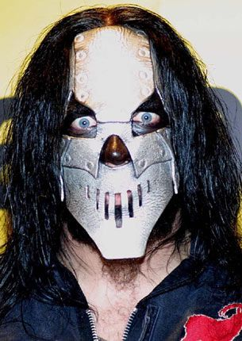

Sus mascaras
Las máscaras de Slipknot tienden a cambiar con cada álbum, por lo que con el sexto álbum We Are Not Your Kind ahora, miramos hacia atrás en la evolución de las máscaras de los nueve miembros. Las máscaras de Slipknot se han convertido en una parte fundamental de su identidad desde que la banda se formó en 1995. Fue, por supuesto, el eje central de Slipknot , Clown, a quien se le ocurrió la idea de sus máscaras. Fue poco antes del primer concierto de la banda, en Halloween de 1995, y la banda estaba ensayando. “Todos estábamos dando vueltas por la habitación preguntando, '¿Qué te vas a poner?'”, Recordó Clown. "Me quité la máscara de payaso que tenía y dije: 'Estoy usando esto'". No les cayó bien a sus compañeros de banda. Icónico, aterrador y, a veces, bastante divertido: las máscaras de Slipknot se convirtieron en una parte tan importante de su primera leyenda que el fotógrafo Paul Harries, que fotografió a la banda en innumerables ocasiones en los primeros días, recuerda que los fans lo detuvieron fuera de los espectáculos y le preguntó si ' Había visto a Slipknot sin sus máscaras. "¿Tienen caras reales debajo?" le preguntaron una vez. Y con eso nació una leyenda.
Slipknot (1999)
Corey Taylor
Con rastas que sobresalen de la parte superior y un rostro fantasmal e inexpresivo, el cantante Corey Taylor sintió que su primera máscara permitió que la música de la banda fuera más pura. “La música entonces era básicamente una plantilla para que un grupo de chicos calientes vendieran un montón de mierda que no significaba nada. Nos ponemos una máscara y no se trata de nuestras jodidas caras. Siempre será la música primero .
Mick Thomson
La primera máscara del guitarrista Mick Thomson fue una máscara de hockey comprada en una tienda, que luego cambió por una máscara de cuero negro. “A Roadrunner no le gustaron las máscaras”, dijo Clown más tarde. "Tampoco querían nueve chicos en la banda, pero no puedo decirte cuántos millones de dólares ha ganado ese sello con nosotros. Me enorgullece saber que ellos estaban equivocados y yo tenía razón".
Craig Jones

El miembro más enigmático de la banda inicialmente simplemente usó un par de bragas sobre su cabeza, antes de conseguir un casco de seguridad viejo, clavarle clavos largos y agregar una linterna en la parte superior.
Sid Wilson
La máscara de DJ Sid Wilson cambiaba constantemente, y con frecuencia cambiaba drásticamente de un álbum a otro. La primera fue una simple máscara de gas, un aspecto básico pero futurista.
Shawn Crahan
La icónica máscara de payaso de Shawn Crahan fue la que inició toda la idea. “Estaba en el centro comercial con una novia y entré a una tienda de Halloween. Había una máscara de payaso allí y cuando me la puse, me convertí en otra cosa. Era $ 49 y tenía $ 50 en mi bolsillo. Se suponía que iba a comprarle el almuerzo a mi novia y se enojó mucho porque gasté todo mi dinero en esta máscara. Bueno ... ella se ha ido, pero todavía lo tengo abajo ".
Chris Fehn
Esencialmente una máscara gimp, con una boca que se podía cerrar con cremallera y una nariz larga y fálica de Pinocho que el percusionista Chris Fehn 'masturbaba' con frecuencia mientras estaba en el escenario. “Refleja mi personalidad cómica”, dijo. "Además, lo elegí por el factor de esclavitud".
Paul Gray
El bajista y compositor Paul Gray inicialmente simplemente se envolvía la cabeza con cinta adhesiva, antes de decidirse por una máscara de cerdo de Halloween para el debut de la banda; la banda le había dicho que reflejaba su naturaleza autoindulgente. Fue criticado por la banda rival Mushroomhead, quien afirmó que les había robado la idea.
Joey Jordison
Una noche, cuando él era un niño, la madre de Joey Jordison llegó a casa de una fiesta de Halloween con una máscara japonesa Kabuki completamente en blanco y, por lo tanto, inquietantemente aterradora. Su mirada sin emociones se quedó con él y la adoptó para Slipknot.
La máscara de Taylor en Iowa era prácticamente la misma que la del debut homónimo de la banda, excepto que era más negra para adaptarse al estado de ánimo de la banda en ese momento. “Estaba bebiendo como un maldito pez. Fue malo, fue un maldito momento aterrador estar en Slipknot porque no nos importaba un carajo y no en el buen sentido ".
Iowa (2001)
Corey Taylor
Mick Thomson
Thomson usó la misma máscara para Iowa que en el debut de la banda. Ahora pintado para que parezca metálico, presentaba una rejilla en la boca, un guiño a la vieja máscara de hockey, y sería algo con lo que el guitarrista se quedaría más o menos para siempre.
La máscara de Root apenas cambia a lo largo de la historia de la banda y, por Iowa , era simplemente una versión más detallada de su predecesora: la cara de un bufón, con boca de cremallera y ojos rojos amenazantes. “Los chicos eligieron esta máscara para domesticarme”, dijo. “Era un tipo tímido antes de unirme a esta banda. Ahora soy un fenómeno "
Jim Root
Craig Jones
En Iowa , el casco de seguridad de Jones se había convertido en una máscara de esclavitud, pero aún tenía las uñas de puercoespín que sobresalían de él. Añadió una cremallera en la boca y, durante las entrevistas, el muestreador notoriamente silencioso se deleitaba en cerrar lentamente la cremallera cada vez que se le hacía una pregunta.
La máscara de DJ evolucionó rápidamente desde la simple máscara de gas del debut de la banda, a una máscara de gas con forma de calavera para el seguimiento de la banda. Wilson hizo nueve de ellos, dando a cada uno su propio nombre.
Sid Wilson
Shawn Crahan
La máscara de payaso se desarrolló rápidamente desde la tradicional (aunque espeluznante) cara de payaso del debut hasta la siniestra encarnación de Iowa. Todavía un payaso, este presentaba un pentagrama al revés, dos cuernos y una parte del cuero cabelludo desgarrado hacia atrás para revelar un cerebro ensangrentado.
Gray fue uno de los pocos miembros de Slipknot que disfrutó del período de Iowa - "Demonios, la pasé muy bien", dijo - y usó una versión actualizada, un poco más humana de látex de la máscara de cerdo que usó en el debut de la banda, pero esto uno tenía ranuras en la boca.
Chris Fehn
Joey Jordison

Jordison agregó pintura de cadáver negro a su máscara Iowa Kabuki, y aún disfrutó de la naturaleza inescrutablemente en blanco de la misma. “Sientes lo que quieres sentir; aterrador, malvado o pervertido ”, dijo. “Todas esas cosas contenidas en una sola máscara”.